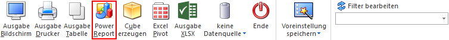
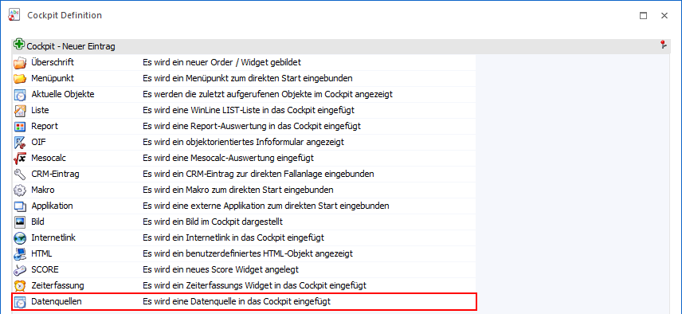
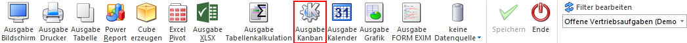
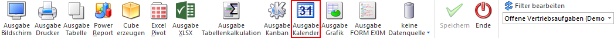
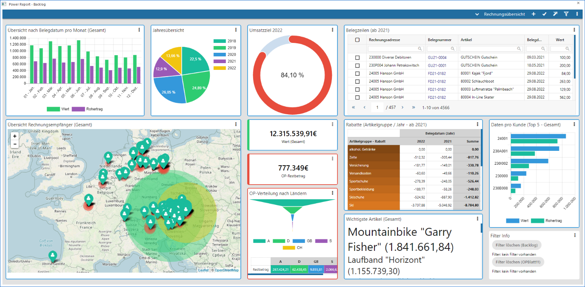

Mit Hilfe der Power Report-Technologie können die auszugebenden Daten grafisch dargestellt und zum Teil direkt beeinflusst werden. Hierbei wird nach den folgenden Modi unterschieden:
ü Power Report mit Datenquelle
Der
Power Report mit Datenquelle stellt die klassische Ausgabe dar und wird durch
Anwahl des Buttons "Power Report", welcher in vielen Auswertung zur Verfügung
steht, gestartet. Das Datenmaterial stammt hierbei immer aus einer "Datenquelle"
und kann mit Hilfe von sogenannten "Widgets" betrachtet werden. Eine Veränderung
der Daten ist nicht möglich.

ü Druckvorschau als Power
Report
Befindet man sich in einer Druckvorschau, so kann durch Anwahl des
Buttons "Power Report" die Ausgabe an den Power Report erfolgt. Das
Datenmaterial stammt hierbei direkt aus der Druckvorschau, wobei auch in diesem
Modus die Betrachtung mit Hilfe sogenannter "Widgets" erfolgt. Eine Veränderung
der Daten und die Verwendung weiterer Datenquellen ist nicht
möglich.
ü View 360 als Power Report
Befindet
man sich in der View 360, so kann durch Anwahl des Buttons "Power Report" die
Ausgabe an den Power Report erfolgt. Das Datenmaterial stammt hierbei direkt aus
der Objektgruppe der View 360, wobei auch in diesem Modus die Betrachtung mit
Hilfe sogenannter "Widgets" erfolgt. Eine Veränderung der Daten und die
Verwendung weiterer Datenquellen ist nicht möglich.
ü WinLine Cockpit
Innerhalb des
WinLine Cockpits können mit Hilfe des Eintrags "Datenquellen" einzelne Widgets
des Power Reports eingefügt werden. Das Datenmaterial stammt hierbei immer aus
einer bestehenden "Datenquelle". Im Gegensatz zu den anderen Modi kommunizieren
die einzelnen Widgets innerhalb des Cockpits nicht miteinander, d.h. der
sogenannte "Quickfilter" wird nicht unterstützt.

ü Stammdaten-Kanban
Mit Hilfe des
Buttons "Kanban" können diverse WinLine LIST-Listen, welche auf Stammdaten
beruhen, als Kanban dargestellt werden, wobei die optische Aufbereitung über den
Power Report erfolgt.
Die Besonderheit hierbei ist die Interaktivität, d.h.
es können Veränderung via Drag & Drop im Kanban durchgeführt und in diese in
den Stammdaten gespeichert werden. Eine Verwendung weitere Datenquellen ist
nicht möglich.

ü WinLine Kalender
Mit Hilfe des
Buttons "Ausgabe Kalender" können diverse WinLine LIST-Listen als Kalender
dargestellt werden, wobei die optische Aufbereitung über den Power Report
erfolgt.
Das zentrale Element bei dieser Anzeige ist immer ein
Live-Kalender-Widget, da über dieses die Definition des anzuzeigenden Zeitraums
erfolgt und somit auch alle anderen Widgets "live" mit Daten versorgt. Abhängig
von dem Typ der Liste kann der Zeitraum des Datenmaterials verändert werden.
Eine Verwendung weitere Datenquellen ist nicht möglich.


In den nachfolgenden Kapiteln werden zunächst die Besonderheiten der einzelnen Modi erläutert. Im Anschluss daran folgen Informationen zum Power Report an sich, welcher in jedem Modus ident zu bedienen ist:
ü Widgets
Button
Ø Ende
Durch Anwahl des Buttons "Ende" bzw. der Taste ESC wird der Power Report geschlossen und alle nicht gespeicherten Definitionen der Power Report-Darstellung verworfen.